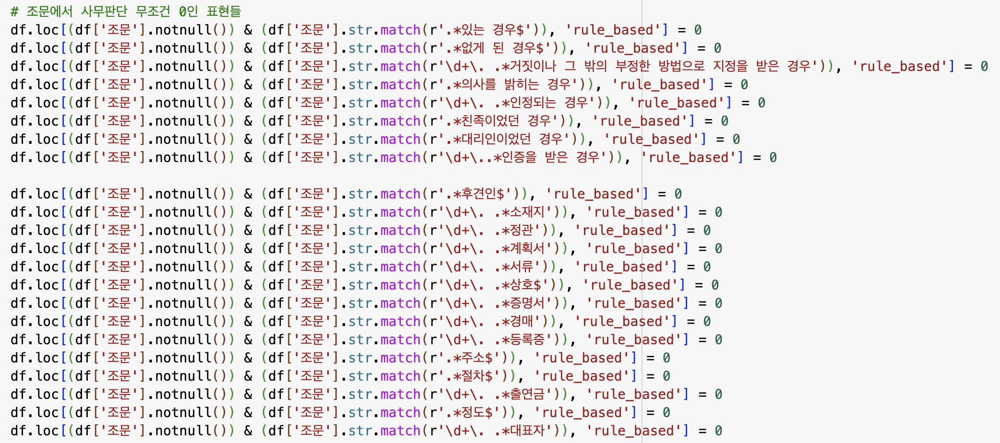
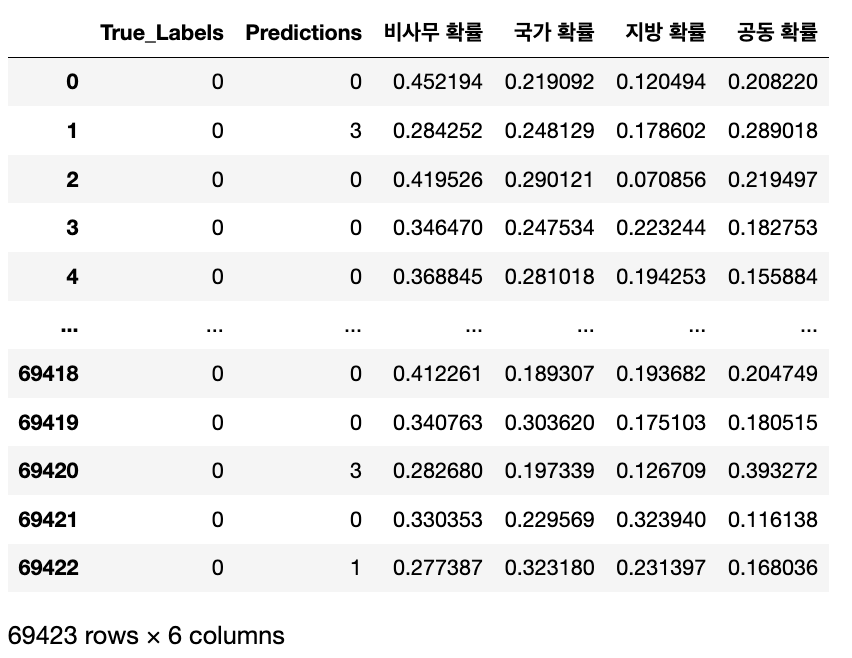
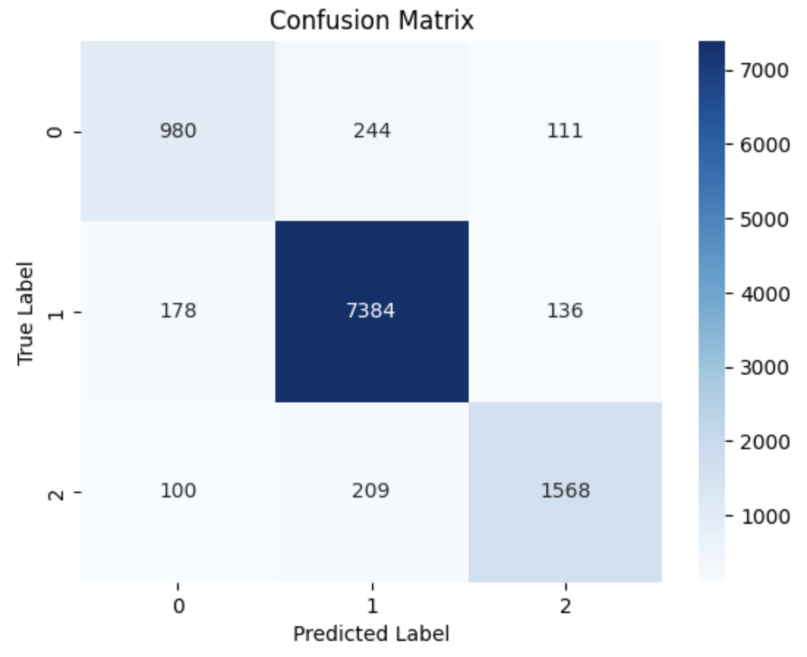
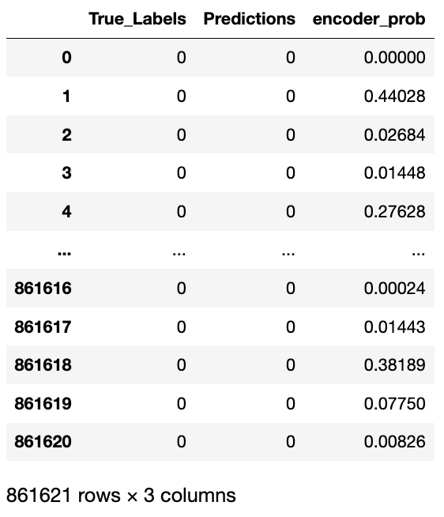

1215_중간보고사항
analysis
중간보고사항(12.15)
0. 중간보고 이후 지방행정연구원분들의 피드백을 반영한 부분
→ Rule Base 된 모델이 필요함.
- 확실하게 사무가 아닌 것들의 ’규칙’을 반영할 수 있는, 새로운 칼럼 [rule_based] 을 생성하였음. (최종보고서에서도 확인한 내용)
- [조문제목]에 정의, 목적 : 예외 9가지 확인필요
- [조문]에 <삭제> : 삭제된 행
- [조문]에 제14조(관리기관) : 조문제목으로만 이루어진 행 : 예외 4가지 확인필요
- [조문]에 제~장, 제~절, 제~편 등 : 법령의 제목으로 이루어진 행
- [호]의 다양한 경우들
1.목적 2.정의 3.명칭 등등

1.png
- [수행주체]의 후보를 dictionary를 만든 후 이를 반영한 칼럼을 추가
→ “[수행주체]의 후보가 조문에 있다면” → 조문에 있는 모든 [수행주체]의 후보를 추출
→ 사무 유형 (대분류) 에 활용
→ 조문에서 수행주체가 뽑아지지 않는데 사무인 경우 : 700여개
1. 분류모델 구축 진행사항
- 전체적인 흐름
| 구분 | 사무분류모델 | 사무유형분류모델 | 사무명추출모델 | ||
|---|---|---|---|---|---|
| 단계 | step1 | step2(추가분류) | step3(추가분류) | step4 | step5 |
| 사용모델 | filtering | 딥러닝 | 머신러닝(SVC) | 머신러닝(RF) | 딥러닝 |
| 내용 | 사무가 확실하게 아닌 조문의 | ||||
| rule을 적용하여 1차적으로 filtering | 사무여부 판별(1과 0) | step2에서 사무라고 판단된 조문에 대해서 사무가 아닌 것들을 추가적으로 판별 | 앞서 step3를 통해 최종으로 분류된 사무에 대해서(사무판단이 1) 사무유형을 국가-지방-공동으로 분류 | kobert 등 한국어 nlp 모델 | |
| GPT 등 생성형 ai (시도예정)를 사용하여 조문+조문제목에서 요약기능 활용한 사무명 추출 | |||||
1.1 사무판단 여부 (3-step으로 진행)
step1 : filtering
step2 : 딥러닝(Encoder)
(결과)

- step3 : 머신러닝(SVC)
(최종 결과)
1.2 사무유형 분류
- 머신러닝(RF)
- 사용한 칼럼 : 수행주체, 법령명
(최종 결과) 

1.3 사무명 추출
- 조문과 조문제목을 입력값으로 넣으면 이를 요약해주는 딥러닝 모델을 활용 예정
- 생성형 ai(GPT 등)
- 입력값을 바탕으로 추출해주는 자연어 모델(Kobert 등)
2. 최종산출물 관련
대시보드로 진행
3. 향후 진행예정사항 혹은 [본 연구 이후] 추가 반영해야 할 사항들
3.1 데이터의 누락 등 Nan값 처리 필요
- “조”, “항”, “호”의 데이터 입력형태 통일 필요 → 사무가 중복인 행들 추가적으로 제거
- 엑셀의 조, 항, 호 값들이 누락되어 있는 경우, 그룹화 하기 어려운 점이 있음.
- 조문제목 Nan 값인 경우 → 마지막 task인 사무명 추출에 활용
- 조문제목이 단순 누락인 경우에는 동일 법령, 조번호에 대해서는 조문제목을 추출하도록 할 수 있으나
- 순수하게 조문제목이 없는 경우도 있음
3.2 중복사무에 대한 처리 필요
- 현재 사무가 2개이상, 혹은 수행주체가 2개이상인 조문들은 현재 모델로 분류하기 어려움
- 사무 또는 수행주체의 갯수를 판단할 수 있는 모델 필요
3.3 사무유형분류 세분화 필요
현재 [대분류]기준으로만 우선 진행하였으나 추후 중분류, 소분류까지 분류를 진행하기 위해서는 추가적인 작업이 필요할 것으로 보임.
대분류 → 중분류 : 수행주체들의 “소속”을 판별 필요
중분류 → 소분류 : ‘위임’, ’위탁’을 판별 필요